Для перехода щелкните по ссылке на желтом фоне:
Вилка нагрузочная НЛИ-250 (НЛИ-250В) для проверки литий-ионных аккумуляторов
НАЗНАЧЕНИЕ
Примечание: Здесь и далее по тексту под аккумулятором понимается одиночная
аккумуляторная ячейка (банка) номинальным напряжением 3,2 В.
Нагрузочная вилка, модель НЛИ-250 (НЛИ-250В)
предназначена для проверки работоспособности литий-ионных аккумуляторов
номинальным напряжением 3,2 В, током нагрузки от 70 до 250 А, при
напряжении испытуемого аккумулятора под нагрузкой 3,1 В. При этом
контроль, производится током 1-часового режима разряда.
Вилка нагрузочная НЛИ-250 применяется при эксплуатации и ремонте только литий-ионных аккумуляторов (для кислотных
и щелочных аккумуляторов не применяется!).
Емкости аккумуляторов, контролируемых нагрузочной вилкой НЛИ-250 (НЛИ-250В) приведены в таблице:
|
Ток разряда, А |
Маркировка сменного сопротивления вилки |
|||
|
«70А» |
«85»А |
«170А» |
«250А» |
|
|
1,0 Сном (1-часовой режим разряда) |
70 Ач |
85 Ач |
170 Ач |
250 Ач |
Условия эксплуатации вилки нагрузочной НЛИ-250 (НЛИ-250В):
Температура от минус 50 до плюс 60 °С, относительная влажность 95 % при температуре плюс 35 °С.
С помощью нагрузочной вилки НЛИ-250 (НЛИ-250В) можно измерить:
- напряжение аккумулятора без нагрузки (НРЦ аккумулятора);
- напряжение аккумулятора под нагрузкой. При этом имеется возможность ступенчатого выбора пользователем величины тока нагрузки в
зависимости от требований предъявляемых к аккумулятору.
Нагрузочная вилка, модель НЛИ-250 (НЛИ-250В), при тестировании аккумуляторов обеспечивает ступенчато- настраиваемый ток
разряда. В стандартной комплектации поставляются сменные нагрузочные сопротивления на токи 70 А, 85 А, 170 А, 250 А.
По требованию заказчика нагрузочные сопротивления могут изготавливаться на другие нагрузочные токи (от 10 до 250А).
Вилка НЛИ-250 (НЛИ-250В) обеспечивает:
1. Возможность замера напряжения испытуемого аккумулятора без нагрузки (НРЦ аккумулятора);
2. Замер напряжения аккумулятора под нагрузкой;
3. Возможность настройки вилки на размер между осями выводов аккумулятора;
4. Поворотный вольтметр дает возможность работы с вилкой в труднодоступных местах.
ТЕХНИЧЕСКИЕ ХАРАКТЕРИСТИКИ ВИЛКИ НЛИ-250 (НЛИ-250В)
1. Тип - переносной.
2. Номинальное напряжение проверяемого аккумулятора 3,2 В.
3. Пределы регулирования тока нагрузки:
- стандартная комплектация - нагрузочные сопротивления на токи
(70±10) А; (85±15) А; (170±30) А;(250±60) А - при напряжении испытуемого
аккумулятора U=3,1 В.
- по отдельному заказу - нагрузочные сопротивления на токи от 10 до (250±60) А при напряжении от 2,5 В до 3,1 В.
4. Измерительные приборы:
Вилка нагрузочная НЛИ-250 выпускается в двух исполнениях:
- НЛИ-250 - с вольтмером с пределами измерений 4-0-4 В, кл. точности 1,5, цена деления 0,2 В, размеры по рамке 60х60 мм;
- НЛИ-250В - с вольтмером с пределами измерений 4-0-4 В, кл. точности 1,5, цена деления 0,1 В, размеры по рамке 80х80 мм;
5. Угол поворота блока вольтметра:
- вокруг горизонтальной оси совпадающей с осью ручки на угол - не допускается;
- вокруг горизонтальной оси, перпендикулярной оси ручки - на угол не менее 60 градусов.
6. Угол поворота вольтметра в обойме - 360 градусов.
7. Основные размеры вилки в рабочем положении (вольтметр расположен горизонтально):
| Нагрузочная вилка |
Длина, мм |
Ширина,мм |
Высота, мм |
| НЛИ-250 |
197 |
136 |
133 |
| НЛИ-250В |
219 |
136 |
130 |
Расстояние между осями ножек 110 мм (регулируется в пределах от 50 до 150 мм).
8. Ориентировочная масса вилки НЛИ-250 - 0,500 кг.
9. Ориентировочная масса вилки НЛИ-250 - 0,526 кг.
Скачать чертеж НЛИ-250 (НЛИ-250В)
Скачать Руководство по эксплуатации НЛИ-250 (НЛИ-250В)
МЕТРОЛОГИЧЕСКОЕ ОБЕСПЕЧЕНИЕ
Измерительный прибор нагрузочной вилки НЛИ-250 - вольтметр М42301. Внесен в реестры
средств измерений России, Беларуси и Казахстана.
Сертификаты и Свидетельства об утверждении средств измерений можно посмотреть здесь: Смотреть Сертификат.
Нагрузочная вилка не является средством измерений - это испытательное оборудование. Обязательной сертификации в РФ не подлежит - имеется
отказное письмо ВНИИСа № 101-КС/235 от 31.03.2021г.
Все нагрузочные вилки "ИнтерБалт" поставляются с первичной метрологической аттестацией Производителем, согласно ГОСТ Р 8.568-2017
"Государственная система обеспечения единства измерений. Аттестация испытательного оборудования. Основные положения".
УСТРОЙСТВО ВИЛКИ НЛИ-250 (НЛИ-250В)
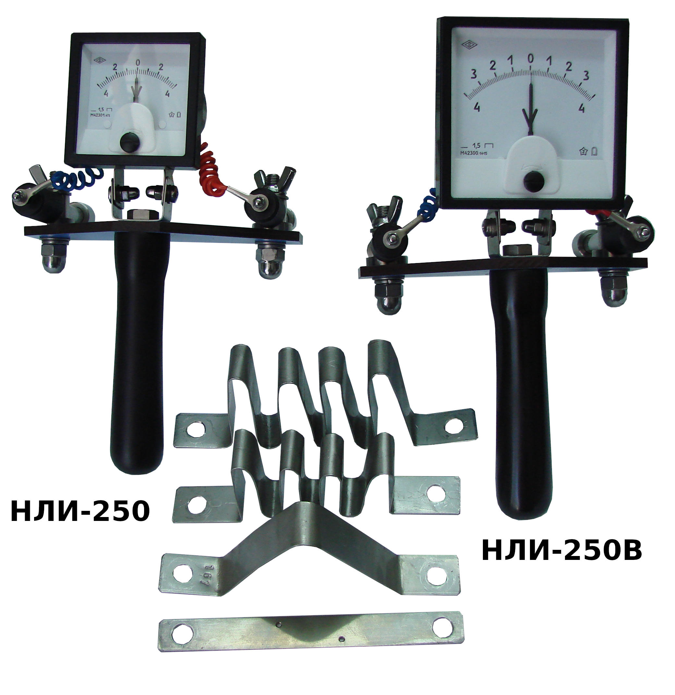
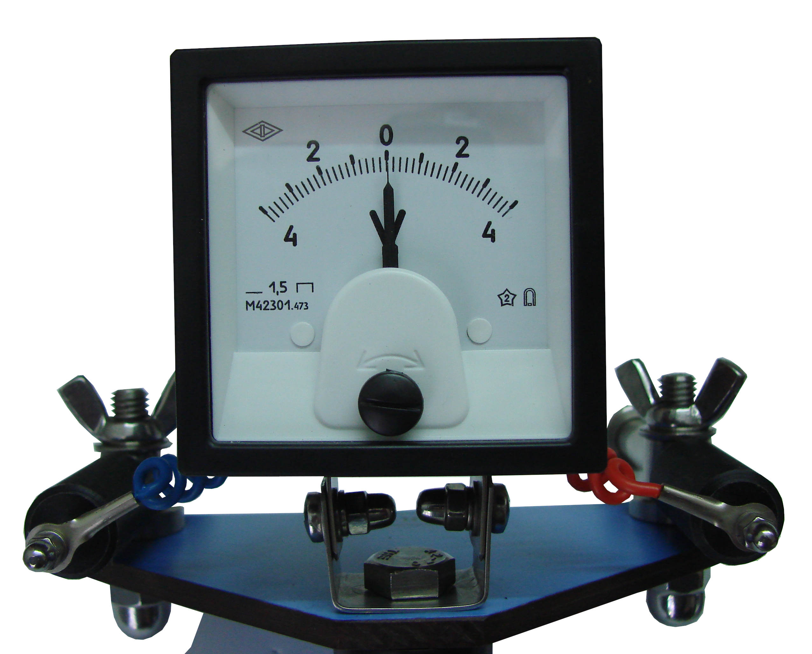
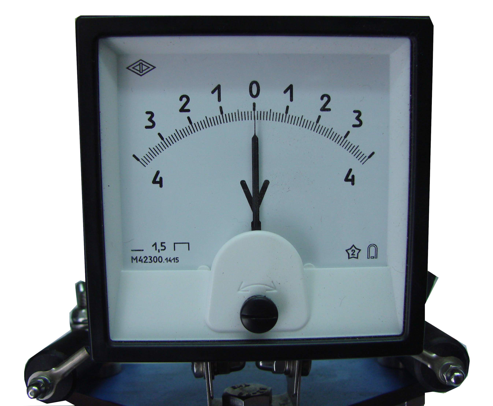
Вольтметр НЛИ-250
Вольтметр НЛИ-250В
Вилка нагрузочная НЛИ-250 (НЛИ-250В) состоит из:
1. Измерительных ножек – левой и правой. Ножки могут поворачиваться - для установки на размер между выводами аккумулятора (от 50 до 150 мм).
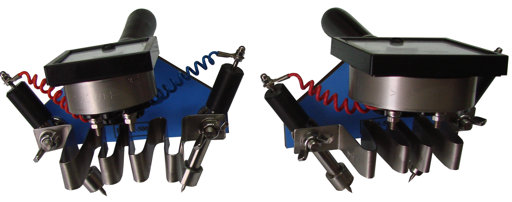
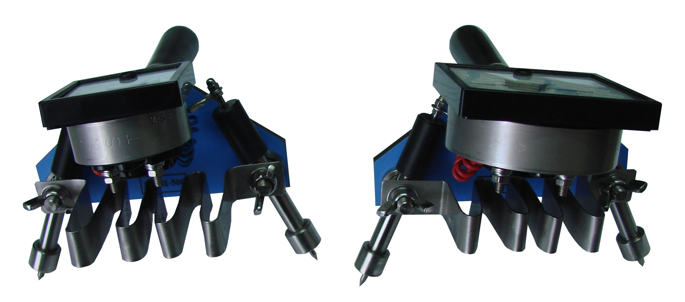
2. Блок вольтметра. Вольтметр может поворачиваться в обойме крепления на 180 градусов.
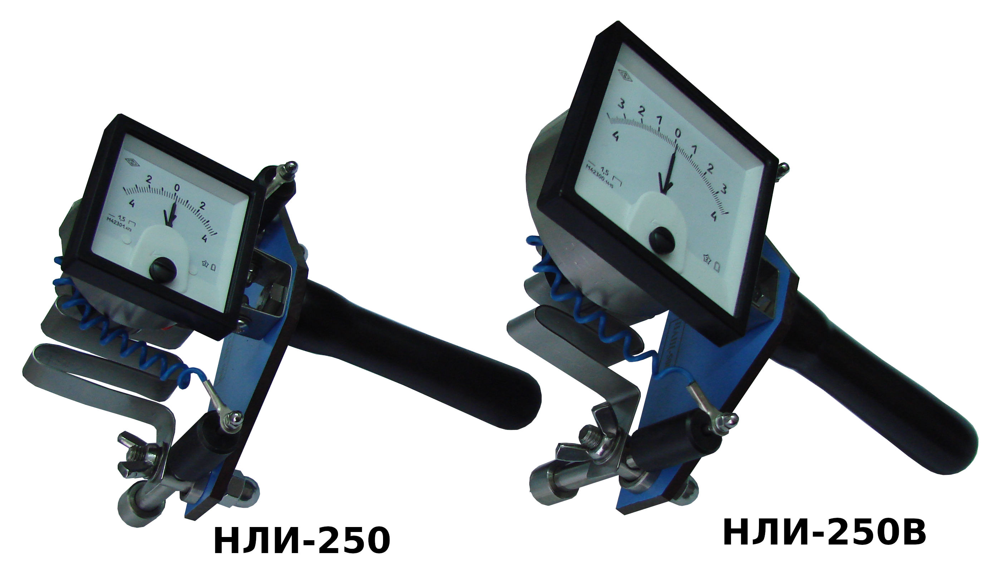
3. Блок вольтметра может поворачиваться вокруг горизонтальной оси перпендикулярной оси ручки на угол до 60 градусов.
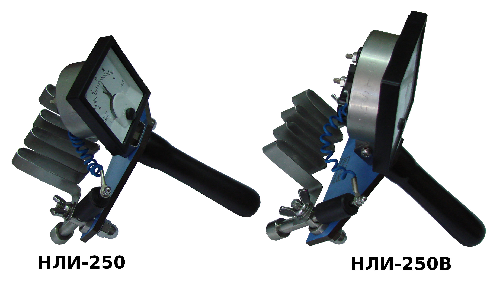
4. Ручка служит для удержания вилки во время работы.
5. Сменное нагрузочное сопротивление крепится к фиксаторам ножек двумя гайками М8.
6. Опция № 1. Поставляется за отдельную плату см. Цены.Дает возможность установить ручку вертикально для удобства работы ограниченном пространстве, особено где имеет место ограничение по высоте (в подвагонном аккумуляторном ящике и т. п.).
7. Вилка нагрузочная НЛИ-250 (НЛИ-250В) с ручкой установленной вертикально (использование Опции №1):
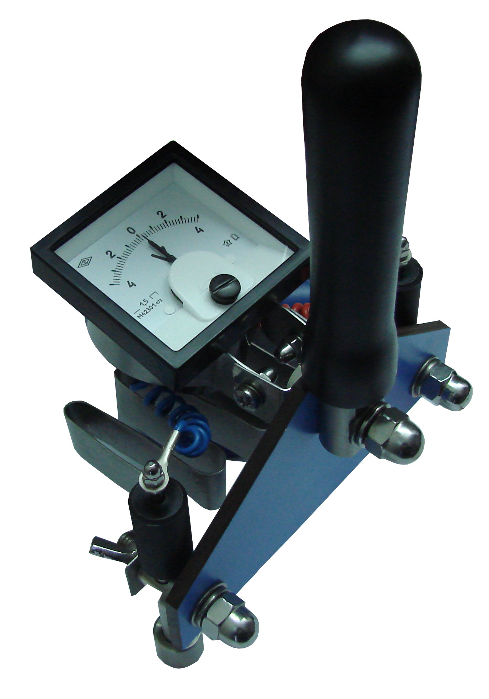
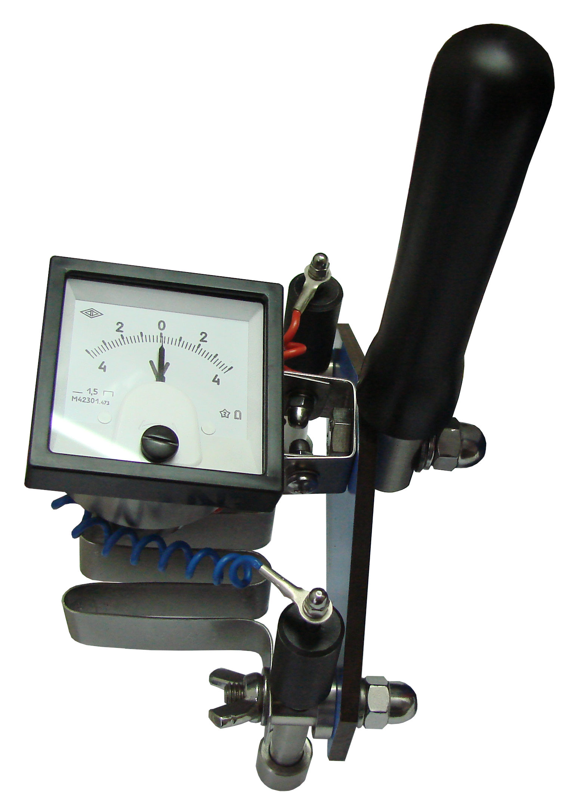
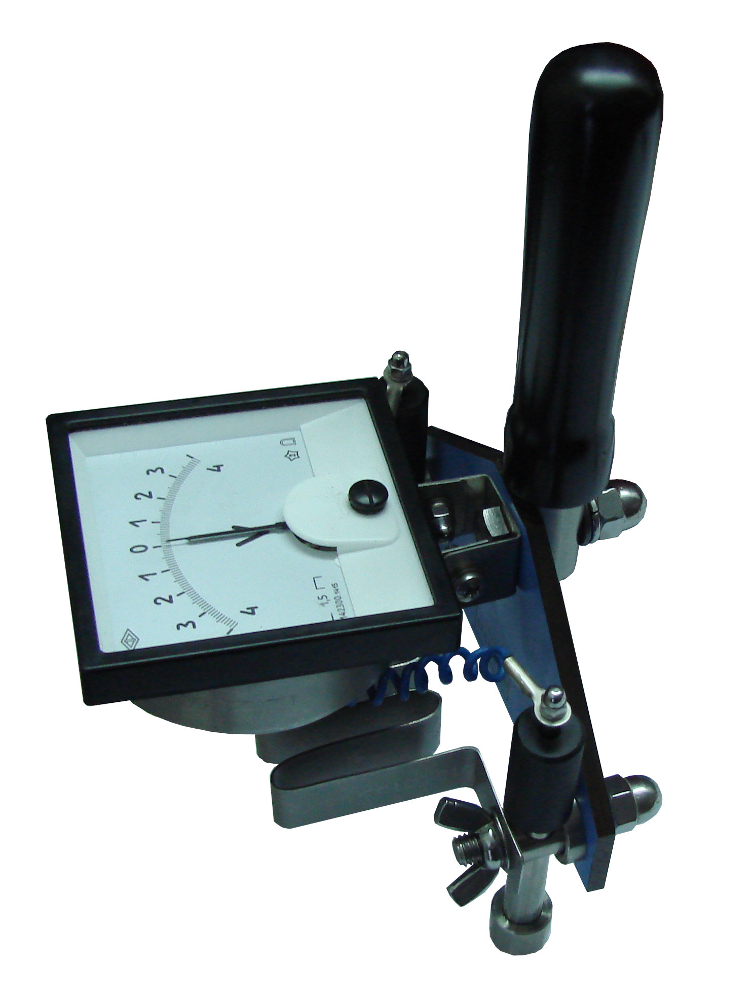
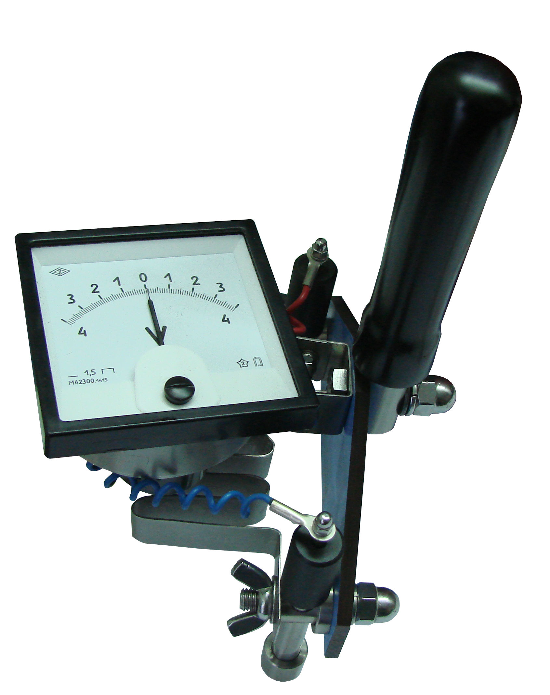
Вилка нагрузочная НЛИ-250 c
с
Вилка нагрузочная НЛИ-250В с
вертикальным расположением ручки
вертикальным расположением ручки
РАБОТА С ВИЛКОЙ НЛИ-250 (НЛИ-250В)
Требуемый нагрузочный ток вилки устанавливается сменным нагрузочным сопротивлением.
В процессе испытания производится замер напряжения испытуемого аккумулятора без нагрузки (НРЦ) – вилку установить измерительными ножками на выводы аккумулятора и, не
нажимая на ручку (не допуская контакта токовых наконечников с выводами аккумулятора), снять показания вольтметра. Напряжение исправного аккумулятора без
нагрузки (НРЦ аккумулятора) должно быть в пределах от 2,7 до 3,65В. При этом напряжение 2,7 В и ниже соответствует полностью разряженному или неисправному аккумулятору.
После этого произвести замер напряжения аккумулятора под нагрузкой - нажать на ручку вилки и привести токовые наконечники в контакт с выводами аккумулятора. Снять показания прибора.
Вольтметр покажет напряжение аккумулятора под нагрузкой. При этом напряжение, измеренное по вольтметру нагрузочной вилки, не должно падать ниже 3,1 В.
Напряжение менее 2,5 В при подключенной испытательной нагрузке (установленной для данного типа и емкости аккумулятора), свидетельствует о том, что
аккумулятор либо разряжен, либо неисправен.
Ваши замечания, предложения и пожелания по конструкции или эксплуатации вилки Вы можете отправить на электронную почту interbalt39@gmail.com.
Для перехода щелкните по ссылке на желтом фоне: